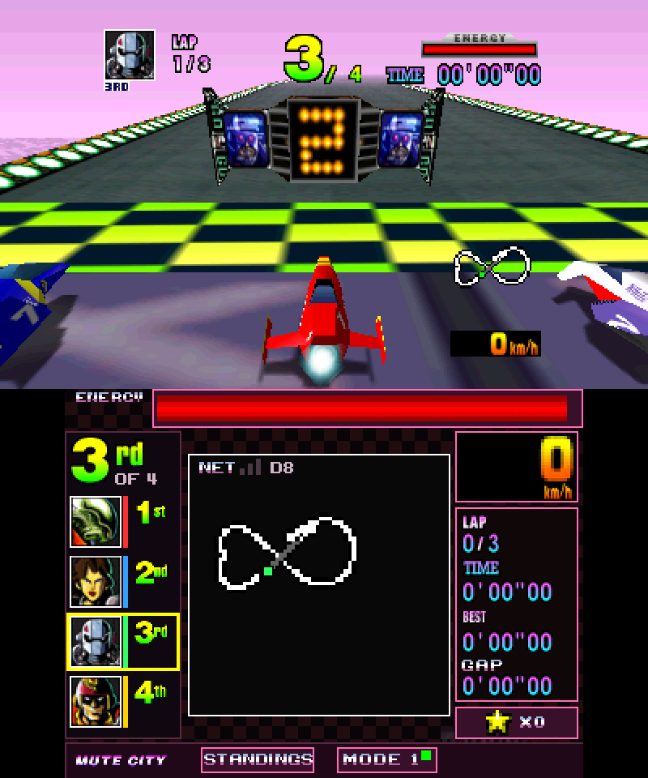
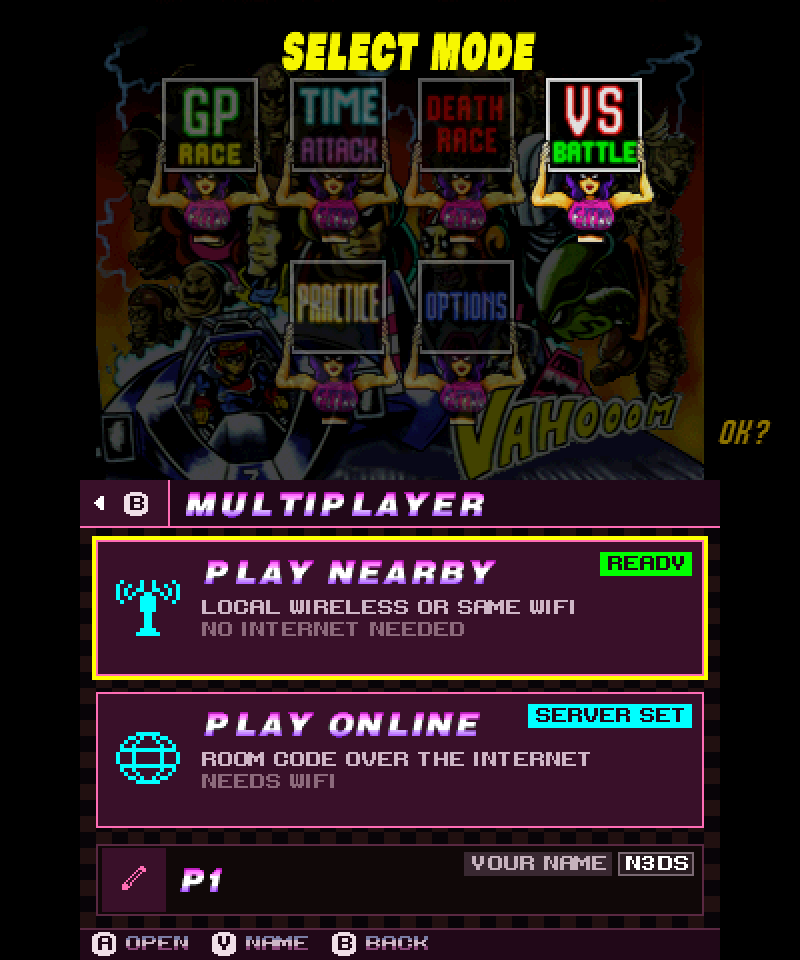
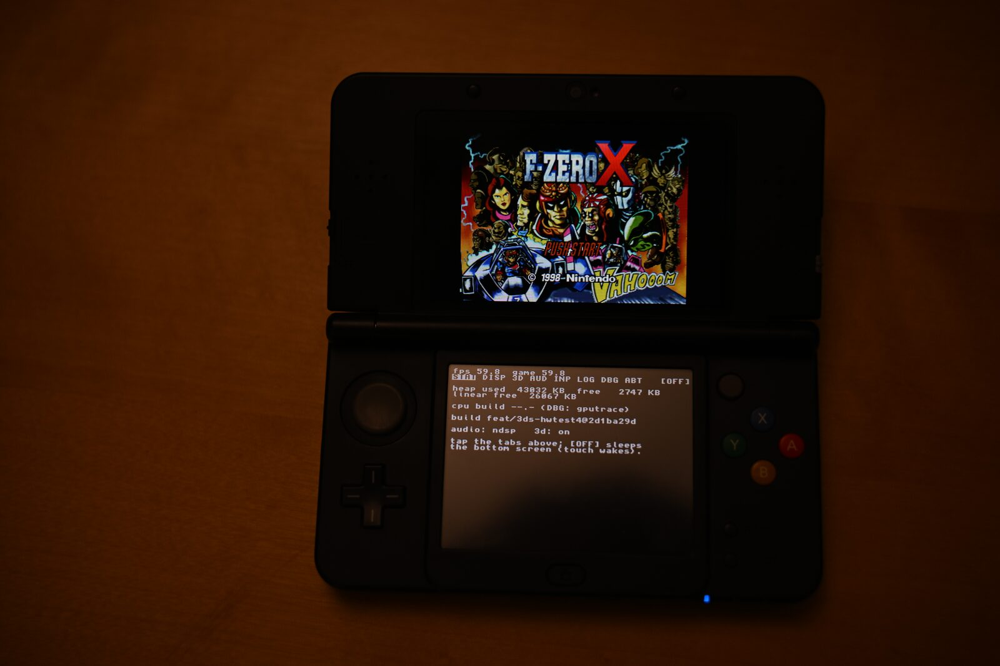
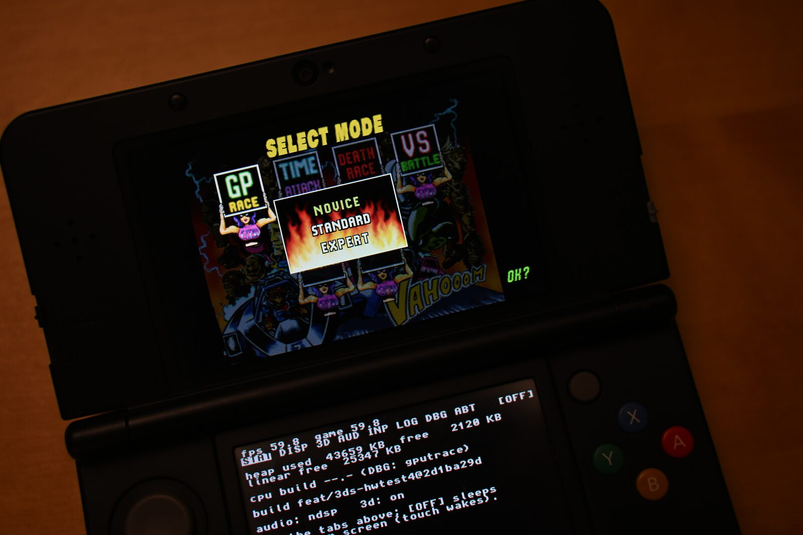
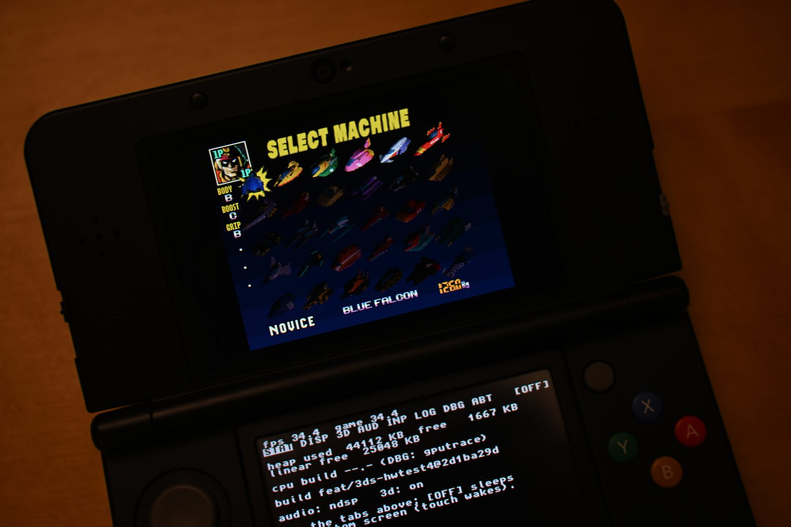
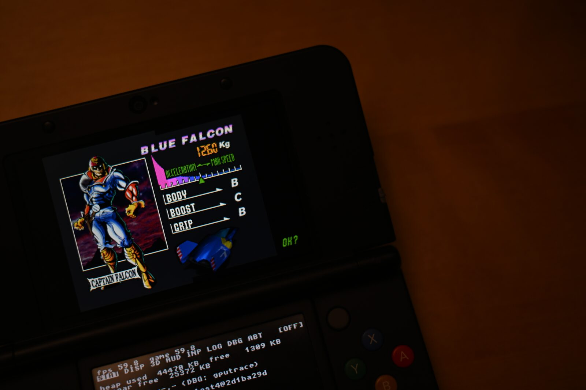

01 · Overview
F-Zero X on 3DS — Old and New, native, with the 64DD Expansion Kit
How G-Diffuser, the PC port of the F-Zero X decompilation, got onto the Nintendo 3DS: one person directing, Claude agents writing all of the code, 11 weeks from first research to multiplayer.
- v0.9.0 2026-09-04 New 3DS and New 2DS XL only: a 59.6 fps hardware median and stereoscopic 3D, after a 24-day sprint.
- v1.0.0 2026-10-19 Old 3DS and 2DS support, a native renderer as the default on both consoles, the 64DD Expansion Kit on New 3DS, and the DASH bottom screen.
- v1.1.0 2026-10-26 Multiplayer for 2–4 players over local wireless, Wi-Fi or the internet; native menus; both 3D eyes in one GPU submission. Release notes in
docs/RELEASE-NOTES.md.
The numbers
Hardware: card-6 test logs, build ba0692e, 10-26 (1P vs CPU field, 3D on); how the numbers got there is on Road to 60. Tokens and cost: session transcripts to 10-26, method on Cost.
On hardware




The clips and photos below are from v0.9 (2026-09), before DASH replaced the debug console on the bottom screen.




What was built
Three console builds from one source tree:
- Old 3DS / 2DSF-Zero X
- New 3DS / New 2DS XLF-Zero X
- New 3DS + Expansion KitF-Zero X with the 64DD add-on
Each installs from the HOME menu (.cia) or the Homebrew Launcher (.3dsx). No ROM or disk image ships: players extract their own.
The whole game
- Grand Prix, Time Attack, Practice, Death Race, VS and the machine screens.
- With the Expansion Kit: Course Edit and Create Machine.
Speed
- New 3DS: 60 fps races in 2D and 3D.
- Old 3DS: 2D races at or near 60; 3D races mostly hold 60.
- The heaviest Old 3DS courses can still drop to 30 in 3D.
The console, used properly
- Stereoscopic 3D on the slider.
- Music and effects on the DSP.
- A bottom-screen dashboard (DASH).
- Clean HOME, sleep and power-off.
Multiplayer (v1.1.0 work)
- 2–4 players, each on their own console.
- Nearby or online.
Both consoles draw through the same native renderer by default. The New 3DS's first-phase render-thread path is still built in as an option; Frontier and Road to 60 cover it.
The stack
- decomp: the F-Zero X decompilation, unmodified upstream, with a small set of patches on top.
- libultraship: the N64 runtime that PC ports of decompiled games are built on. The port carries a trimmed copy with its 3DS changes folded in. It loads the game's assets; its original renderer remains as a fallback.
- port/3ds: the port itself, 181k lines: rendering, stereo, audio, input, menus, lifecycle, multiplayer and packaging.
- the native renderer: N64 PC ports normally translate the game's drawing commands into GPU calls one at a time, every frame. This port instead writes the 3DS GPU's own commands directly, from data prepared ahead of time, for races, menus and most transitions: nearly everything on screen. Only a few rare screens, such as the course editor and the ending, still take the old route. No other port in this family does this, and it is what lets the Old 3DS keep up. See The road to 60, all over again.
How it went
The first phase (08-11 → 09-03) ported the game to the New 3DS. The second (09-07 → 10-19, not originally planned) brought it to the Old 3DS through a native renderer and shipped v1.0.0. Then a week of v1.1.0 work.
| Dates | Stage | What happened |
|---|---|---|
| 08-11 → 08-14v0.9 | From research to a race | Feasibility dossier, a plan for a team of agents, five parallel foundation streams, six boot bugs; first race at 12–20 fps in the emulator. |
| 08-20 → 08-22v0.9 | Playable, then on a console | Fog, HUD, livery, shadow and sky fixed; menus from 27 to 60 fps; first hardware run 08-21 ("wow it runs amazing"), audio the same evening. |
| 08-27 → 08-28v0.9 | Product grade | Stereo 3D armed, touch menu, rival detail; a GPU vertex-transform moonshot built and shelved; README and release package. |
| 09-01 → 09-02v0.9 | Lifecycle and the last big lever | HOME crash and close-from-HOME hang fixed; per-frame display-list re-scanning replaced by memoized results; the LOCKED-60 campaign launched. |
| 09-02 → 09-03v0.9 | Multi-core | Render thread on core 2, one frame ahead; median 59.6 fps with 53% of frames at the cap. v0.9.0. |
| 09-07 → 09-29v1.0 | Make it fit | Old 3DS restarted; build squeezed into its 64 MB app region. First boot on a real Old 3DS: about 10 fps. |
| 09-29 → 09-30v1.0 | Find the real costs | Narrower audio lock (−20 ms a frame); frame skipping ends the slow motion; a retained renderer wins in the emulator only. |
| 09-30 → 10-01v1.0 | The probe | Hardware counters: the limit is instruction-cache misses, not instruction count. A working pose-replay fallback is shelved: "we should go for a real 60!" |
| 10-01 → 10-02v1.0 | Native renderer | Small race loops sized to the 16 KB instruction cache. 2D Grand Prix at a 16.5 ms median frame. |
| 10-03 → 10-08v1.0 | 3D at 60 | Per-eye resubmit: 59–60 fps in 3D on most courses; the heaviest can fall to 30. |
| 10-08 → 10-19v1.0 | Release | Expansion Kit verified tick-for-tick, released for New 3DS only (too slow on Old); DASH ships; adversarial review; v1.0.0. |
| 10-20 → 10-26v1.1 | After v1.0.0 | 2–4 player multiplayer; one GPU submission for both eyes (Old 3DS 3D menu 40.2 → 44.6 fps); HOME-close lock fixed. |
See Agentic workflow for how the second phase was run and The road to 60, all over again for the Old 3DS campaign, card by card.
Read on
- Author's notes: The one page written by a human.
- Every step: The chronology, New 3DS to v1.1.0.
- Road to 60: The New 3DS performance campaign, round by round.
- Road to 60, again: The Old 3DS needed a new renderer: how it works, and what shipped.
- Pushing the boundaries: How it compares to the field.
- Difficulties: The fights worth retelling.
- Frontier: What this port does that others in its position haven't.
- Agentic workflow: How the fleet was run, and how the ship was steered.
- Cost: Tokens, dollars, subagents.
docs/research/, the hardware logs, or the session transcripts the Cost page counts. Where a value is an estimate (the dollar figures, which apply published API list prices to exact token counts), the assumption is stated next to it.